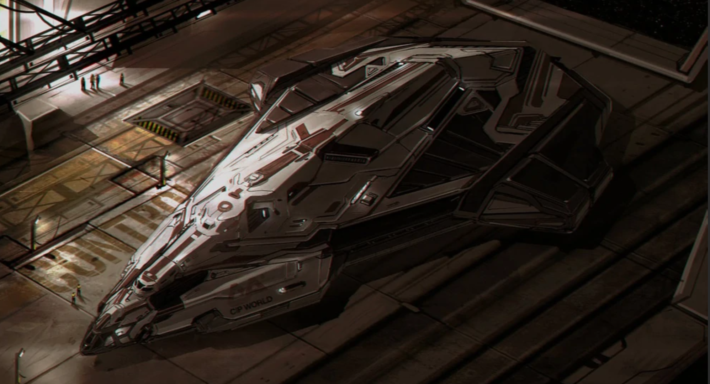

Manufactured by Faulcon deLacy, the Python is a multipurpose ship that offers an enticing balance of manoeuvrability, firepower and defence. With five hardpoints, it can go head-to-head with large ships such as the Anaconda and Imperial Cutter, while its agility allows it to handle smaller vessels without having to rely on turret weapons. The Python also has a sizeable cargo hold, making it a viable choice for those seeking a combat-capable freighter.